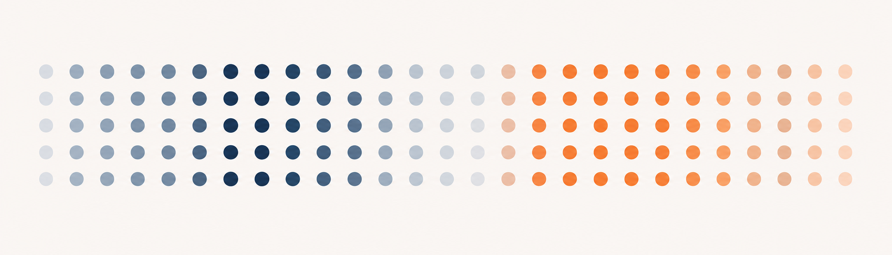

3 Organizing Data

Last chapter we discussed different types of data and practiced representing them in R. You did this by writing out data values in vectors, essentially making the data up. However, real data comes from somewhere else - a study you run, an open-source repository, etc. In addition, data usually consists of more than one variable at once, stored together in a dataset. In this chapter we will get familiar with how to store and access datasets in files, and how to manage a much larger amount of data than we’ve so far worked with.
3.1 The structure of data
Data can come to us in many forms. If you collect data yourself, you may start out with numbers written on scraps of paper. Or you may get a computer file filled with numbers and words of various sorts, representing many variables at once.
So far we have worked with one variable at a time, which is easy to visualize and understand simply by printing its vector. However, most real-world data has many variables stored at once. To manage this, it is necessary to organize and format data so that they are easy to analyze using statistical software. There is no single way to organize data, but there is a way that is most common, and that is what we recommend you use.
This common way is called a data frame. Under this framework, data are stored into rectangular tables, with rows and columns. What goes on each row and column follows three principles:
- Each column is a variable
- Each row is an observation
- The first row contains the names of all the variables
Rectangular tables of this sort are represented in R using a new data type - conveniently, called a data frame. It is a rectangular matrix as described above, with columns as variables and rows as the sampled observations. Each value in the same row are different variable values belonging to the same observation (e.g., the same person, animal, habitat, etc.) Each value in the same column are values within the sam variable, from different observation. The first row of a data frame provides a way to save the column headings (i.e., variable names) in the same file as the data values.
3.2 Creating a data frame
3.2.1 Combining vectors
Let’s see how we create and work with data frames in R. Say we have two vectors, x1 <- c(1,2,3,4,5) and x2 <- c(18,21,20,23,20). We can combine these together into one data frame object using the data.frame() function.
This function takes as arguments all the vectors you want to combine, and lines them up together as columns in the order you typed them in. This way, you imply that the second item in x1 and the second item in x2 belong to the same observation, since they appear on the same row in the data frame.
By default, the name of each column in a created data frame is the name of the vector used to build it. You can alternatively name these columns more descriptively:
Notice the single = sign in this function call. In R we use this operator within functions to assign values to named arguments. This is how you assign values to specific function arguments when a function takes multiple arguments. Also, by declaring argument names, you don’t have to put the argument values in a specific order. You’ll see more examples of named arguments later in the course.
Using this approach, you can form a data frame out of any set of variables - well, almost.
Try out the code below, and see if you can find why it causes an error. What can we do to fix it?
Since a dataframe is a rectangle, in order for vectors to be combinable, they need to be the same lengths.
3.3 Importing existing data
The vast majority of the time in data analysis, you are not manually creating vectors and data frames. Instead, you are importing an existing file of data. So in this and the next few chapters we’re going to practice working with and understanding an example dataset from data collected in an undergraduate statistics class. In this dataset we have survey responses from 67 students about their demographics, some physical attributes, and emotions and beliefs about statistics.
You may have experience opening datasets in programs like Excel with an .xlsx extension. The extension tells you what kind of file format it is - .xlsx, for example, is an excel file. There are many file formats data can be saved in that are more or less easy to open in various software. Our student dataset is saved as a .csv, meaning a “comma-separated value” format, as this is really easy for computer programs to parse. If you were to open this file in a basic text editor program, you’d see rows are separated on different lines, and columns are separated by commas. In R, the read.csv() function can understand this format and create a rectangle data frame for us.
But before we can load our data, R has to know where on your computer it is located. By default, it only looks in what is called your working directory - a specific folder on your computer that R treats as its “home base”. You can use the function getwd() to learn what your current working directory is.
This is like a mailing address for where a file lives on a computer, with slashes separating each level of folders. Because this book is hosted on a website, the current working directory is where these web files are stored on the web server. On your own computer, getwd() will return something different.
The important thing to know about accessing files through a coding language like R is that it can’t see your whole computer at once, only what is in the current working directory. It’s not a search engine like Google Drive or Finder on a Mac. Thus if you have stored a data file in any folder (aka directory) that is not the current working directory and try to open it, you will get an error that the file doesn’t exist. For example, we will try to load the studentdata.csv file from the working directory even though it has been stored somewhere else:
To successfully open a data file, you will need to know the address of where the file is on your computer, called the file path. For this online exercise, we will access the file using a web file address pointing to where the data have been saved on this website. We can access the data by passing the file path as an argument to read.csv(), surrounded by quotes.
If this data file lived on your own computer and was within your working directory, you could load it with read.csv("studentdata.csv"). If the data lived in a different folder on your computer, like a folder for your coursework on your Desktop, you’d use either the full path to that file (e.g. “Desktop/StatsClass/studentdata.csv”) or the relative path from your working directory in order for R to be able to find it.
If the terms “directory” and “relative path” are unfamiliar to you, you’re not alone! This kind of information isn’t standard in computer classes anymore, but they are important concepts for understanding how a computer works and for working with data. “Further reading” in the “Chapter resources” section at the end of the chapter (Section 3.7) has a link for learning more.
3.4 Looking at data
The first thing to do when opening a dataset for the first time is to understand it - what each variable is, how many data points, what the variable data types are, etc.
After you run the code above, you should have seen a print out of some rows of data. You might be thinking to yourself, “Wow, that’s a lot to take in.” In fact, this would be considered a small dataset! Real data can have thousands of data points stored together, with hundreds of variables recorded. It can get unwieldy to look at a whole dataset at once. Thus its usually best to look at a summary of the data in a data frame, or a sampling of it.
We can use certain functions to do this summarizing for us. But first, we have to make sure we save our data frame so we can keep using it over and over. Remember that we have a new data type, data frame, which means it can be saved as an object itself. That’s why we assigned the output of read.csv() to the object studentdata above. Otherwise it would have printed the whole dataset for us, but we wouldn’t have been able to access it again later.
In the code below, use str() to investigate the structure of the object studentdata.
A cool thing about the str() function is that, when you’re working with a complex object like a data frame that contains many values, it’ll tell you the type of the object as a whole as well as the type of every variable within it. Look at the output above - what data type is the variable Height? Can you find where it tells you the size of the data frame?
Using str() lets you summarize the information within a data frame without opening the whole thing to view. Another way to do it, if you want to see how the data frame is arranged, is to use the function head(). This will show you just the first 6 lines of the data frame.
Next you probably want to know how big your dataset is - how many observations and how many variables you are working with. The function dim() will tell you the size of each dimension of the data frame (i.e. the number of rows and number of columns):
The first dimension reported here always corresponds to the number of rows, and the second dimension is the number of columns.
You can also use code to find the size of specific dimensions of the data frame. Since observations are rows and variables are columns, you can use specific functions to count how many rows and columns a data frame has. In R, these functions are nrow() (for number of rows) and ncol() (for number of columns).
Use ncol() to output the number of variables in studentdata.
Oftentimes we want to view or reference a specific variable within a data frame. So long as a data file stored the names of each variable on the first line, we can access it using the $ symbol in R. If you want to see just the SleepHours variable in the studentdata data frame, for example, you would write studentdata$SleepHours.
Try using the $ symbol to print out just the variable Siblings from studentdata.
When R is asked to print out a single variable (such as Siblings), R prints out each observation’s value on the variable all in a row. You can then work with this variable as if it were a single vector, like we used in the previous chapter. This variable measures how many siblings each respondent in our data has. Try adding 1 to the Siblings variable to represent how many children were in their family total. (Remember that adding a constant to a vector adds that value to every item in the vector).
Add 1 to everyone’s Siblings value, and print out the result.
Usually you want to access variables by their name - it has more meaning to humans reading code. But just so you know, you can also access variables using index notation with [] brackets. However, if we’re going to use indexing for a data frame with two dimensions (rows and columns), we need to provide an index value for both which row we want, and which column we want. Recall that rows are always the first dimension and columns are always the second, so we type our indexing like [ROW_NUM, COL_NUM]. E.g., studentdata[1,2] would return the value in the first row and second column of the data frame.
If we want to print out the entirety of the third row, we’d use studentdata[3,]. Leaving nothing after the comma for column number tells R to return every value in the third row regardless of column. Likewise, returning the entirety of the third column from studentdata would look like studentdata[,3].
Follow the comments instructions below to try out indexing yourself:
3.5 Control flow
With more data comes more choices regarding what to do with it. So far we have opened and looked at the variables saved in a data file, but we haven’t done anything with them yet. Often times we will do multiple things to data as a part of an entire analysis process, such as subsetting, cleaning, computing new variables or summaries, visualizing, and modeling. We’ll learn about those operations in Chapter 4. But first, in order to manage all these steps, we need to talk about an important concept in coding called control flow.
Control flow refers to telling a programming language like R the order you want it to evaluate code commands in. So far we haven’t written much more than a few lines of code at a time, but what happens when you write code scripts that are many lines long? How is it all executed? By default, R reads your code from the top of a file to the bottom. Each line of code happens one at a time, in order. But sometimes you want R to do things multiple times (e.g., repeat a calculation for each data point), or you want it to do different things depending on some condition (e.g., do a calculation only if a data point is of a certain value).
To do this, you need to control what steps R executes, and when to execute them. Two concepts that help you do this are conditional statements and loops. By including some specific syntax, you can set up conditional statements and loops that tell R when you want code to be treated in a special way like this.
3.5.1 Conditional statements
The most basic control flow statement in R is the “if” statement. An if statement checks whether some logical expression is true or false and executes a specified block of code if the logical expression is true.
In R, an if statement starts with if, followed by a logical expression in parentheses, followed by the code to execute in curly braces. Before running the below code, read the comments and see if you can predict what will be returned on the screen.
In this case the logical expression was true - x was greater than y - so the print(x) statement was executed. If the logical statement was false, nothing would have been printed.
If statements are often accompanied by “else” statements. Else statements come after if statements and allow you to execute separate code in the event that the logical expression of an if statement is false.
In this case, (x > y) is a false statement so the code in the if block is skipped and the code in the else block is executed instead. Were (x > y) true, the code in the if block would be executed and the else block would be ignored.
Notice that there is no logical statement in parentheses after the else keyword. Why do you think that is?
Try debugging the code below to make it work.
If statements require a logical statement that is only true or false. There can be no other option. Thus, if (x > y) is not true and the if block of code doesn’t run, the only other option can be false, which is when the else statement kicks in. Because of that, no logical statement is needed after else - if R gets to that keyword before executing any other block, it knows to execute this one.
What about when you have more than two options you want R to be able to do? I.e., maybe you want to print both x and y if they equal each other? You can extend this basic if/else construct to perform multiple logic checks in a row by adding one or more else if statements between the opening if and the closing else. Each else if statement performs another logic check and executes its code if the check is true.
Since else if is evaluating a new logical statement, it does need to have that logical statement included after the else if key phrase. You can include as many else if blocks as you want, just remember that they are evaluated in order.
Here’s another example of using conditional statements, this time using the studentdata dataset. Let’s say we only want to look at participants who have at least 1 sibling. We could use conditional statements to tell us whether some observation should be included in our final dataset or not.
This tells us that the first observation of the dataset (element 1 in the Siblings variable) had a value of at least 1, so we want to keep it. On the other hand, row 4’s value was less than 1, so should be excluded.
Right now this seems like a lot of work when you could just look at the values in row 1 and row 4 yourself. But the power of conditional statements often comes when you need to repeat something over and over, which we will cover next.
3.5.2 For loops
For loops are a control flow mechanism that let you iterate through multiple items in a sequence and perform some operation on each one. For instance, you could use a for loop to go through all the values in a set of numbers and check whether each conforms to some logical expression, or to print each value to the console.
Thefor keyword is also followed by some command in a set of parentheses. This time, that command also uses the in keyword. This keyword essentially tells R that you want to consider one thing at a time (which we’ve named item), and each thing comes from some larger set (the variable Siblings in studentdata).
When the command in the set of parentheses looks like (X in SOME_VECTOR), this is saying that X will take on the value of a specific item in SOME_VECTOR for that iteration of the loop. However, you can also lean on the function length() to go through each position of each item:
Instead of the object position taking on the value of each item in my_sequence, it is now taking a numeric value in the sequence 1 through the length of my_sequence.
%in% is NOT the same as the in statement used in for loops. That one helps R go through each item in a sequence; %in% is used in conditional statements that check whether a value matches ANY item in the sequence.
For loops and conditional statements can be combined.
For example, think about how you can add an if block within the for loop block to only print out every item in the sequence 1 through 10 that is greater than 5:
Or, say we want to know all the rows of studentdata that should be excluded based on no siblings. The code below creates a vector that tracks these rows. See if you can explain what each line of code does.
3.5.3 While loops
While loops are similar to for loops in that they allow you to execute code over and over again. For loops execute their contents, at most, a number of iterations equal to the length of the sequence you are looping over. While loops, on the other hand, keep executing their contents as long as a certain logical expression you supply remains true.
Why wasn’t “Done!” printed until the end in the code above?
Remember that a loop will only loop over code that is contained within the “{}” brackets of the code block.
While loops can get you into trouble because they keep executing until the logic statement provided is false. If you supply a logic statement that will never become false, it will run forever. For instance, if the while loop above didn’t include the command to increment the value of hour by 1, the logic statement would never become false and the code would run forever. You’d never stop studying! Infinite while loops are a common cause of program hangs and crashes.
Consider the following while loop written in comments:
If you uncommented this code and hit “run”, it will never stop since hour will never become larger than end_time (it is commented out here so that your web page doesn’t freeze). It is important to make sure that while loops contain a logical expression that will eventually be false. But if you find yourself in a position like this, most coding programs give you a way to manually stop code. In this online book, if you ever get stuck with code that won’t finish, just reload the page.
Although you can use a while loop to do anything a for loop can do, it is best to use for loops whenever you want to perform an operation a specific number of times. While loops should be reserved for cases where you don’t know how many times you need to execute the loop.
3.6 Writing your own functions
Control flow is very useful for managing the progression of steps you take in a long program or analysis. So much so, that a lot of other people have written new functions to download (remember packages from Chapter 1?) that implement common analysis control flows for you. In this introductory course, we will usually use those downloadable functions to save us time. But it is still important to know how to explicitly define control flow like above because occasionally, you will need to do something that has not already been written by someone else. In these cases, if you need to do the thing over and over, writing your own function becomes useful. In addition, if you find yourself repeating the same analysis steps over and over for multiple projects, you can write functions that will execute sets of other functions, which will save you a lot of time when writing code.
A function definition requires three pieces of information: the function name, the argument(s) to give it, and a block of code that is executed whenever your function is called. For example, here is a function that will convert temperature readings in Fahrenheit to Celsius.
At the bottom of the code window, use the function with today’s temperature in F to find out what it is in C.
We define a new function, fahrenheit_to_celsius, by assigning it to the output of a function that makes functions (helpfully, called function()). The arguments passed to the function-making function are the arguments you would pass to your own function when using it. Next, the body of the function – the statements that are executed when it runs – is contained within curly braces {}. The statements in the body are indented, which makes the code easier to read. Lastly, the final line of the function body has the function return(), which tells R what value should be returned by your function.
When we call the function, the values we pass to it are assigned to objects so that we can use them inside the function. Those objects are not defined outside the function block, and thus don’t exist outside the function block - this is known as object scope.
Try defining your own function to convert Celsius temperatures the other way into Fahrenheit.
3.7 Chapter resources
3.7.1 Learning goals
After reading this chapter, you should be able to:
- load a dataset into R
- Explain what the rows and columns of a data frame mean
- Access particular variables in a data frame
- Create control flow code using if/else, for, and while
- Write your own R functions
3.7.2 New concepts
- dataset: a collection of information, representing data values collected from multiple entities and usually across multiple variables.
- data frame: a data type in R that holds dataset values as a rectangular matrix, with rows as separate observations and columns as separate variables.
- named argument: values passed as arguments to a function and identified by a specific parameter name. In R, the name/value pair is declared with an = sign.
- working directory: the directory on a computer that is currently visible to a computer program.
- file path: the location of a file within the directory structure of a computer. The absolute file path is the path of navigation to the file from the computer root directory. The relative file path is the path of nagivation to the file from the current working directory.
- dimension: A property of a matrix. The value of the first dimension is the number of rows and the value of the second dimension is the number of columns.
- control flow: Ways of controling the order in which multiple actions in code are executed.
- conditional statement: A programming language construct that performs different actions depending on the value of a logical expression.
- loop: A sequence of code actions that is repeated a set number of times (in for loops) or until some condition is met (in while loops).
- object scope: The accessibility or visibility of objects within different parts of your code.
3.7.3 New R functionality
3.7.4 Further reading
**link to optional doc explaining directories and paths